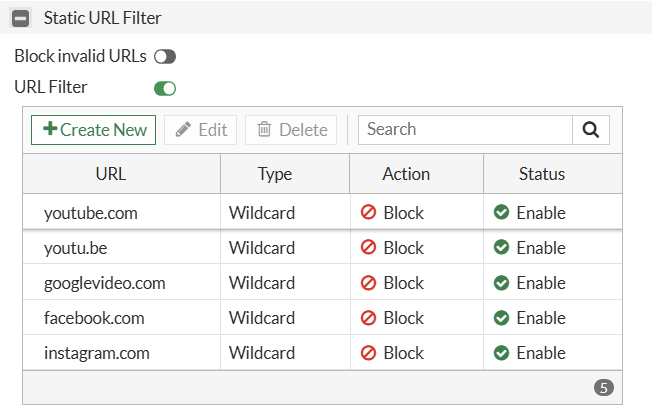

FortiGate Firewall – Block Social Media Websites Using (GUI)
Overview
FortiGate Web Filter allows network administrators to block access to specific websites like: www.youtube.com, www.facebook.com, www.instagram.com, domains, and URL paths.
Configuration workflow
Step 1: Create the Web Filter Profile
-
Log in to the FortiGate GUI.
-
Navigate to Security Profiles → Web Filter.
-
Click Create New.
-
Enter the profile name:
Block-Social-Media.
Step 2: Configure Static URL Filter
Inside the new Web Filter profile:
-
Find the Static URL Filter section.
-
Enable URL Filter.
-
Click Create New for each website.
-
Add the following entries:
| URL | Type | Action | Status |
|---|---|---|---|
*youtube.com |
Wildcard | Block | Enable |
*facebook.com |
Wildcard | Block | Enable |
*instagram.com |
Wildcard | Block | Enable |
| Purpose: Adds the social media websites to the URL block list. |
Use the following example configuration: (Screenshot):

Step 3: Apply the Profile to the Firewall Policy
A URL filter will not protect users unless the applicable traffic passes through a firewall policy with the Web Filter profile enabled.
-
Go to Policy & Objects → Firewall Policy.
-
Identify the policy that allows users to access the internet.
-
Edit that policy.
-
Enable Security Profiles or UTM Inspection, depending on the FortiOS version.
-
Enable Web Filter.
-
Select the profile
Block-Social-Media. -
Enable SSL/SSH inspection as appropriate for your network.
-
Save the policy.
Important: Edit the correct internet access policy. Do not change unrelated policies.
Use the following example configuration: (Screenshot):

Step 4: Test the Configuration
-
Connect a client computer to the network.
-
Open YouTube, Facebook, and Instagram.
-
Confirm that the websites are blocked.
-
If YouTube videos still play, check HTTPS inspection, QUIC/HTTP/3 traffic, and whether the correct firewall policy is being used.
Expected Result
YouTube, Facebook, and Instagram should be blocked for users whose internet traffic passes through the configured firewall policy. Websites not matched by a blocking rule should remain accessible.
Note: GUI menu names can differ between FortiOS versions. Configuration must be tested on a client device to confirm that blocking is working.
Check Web Filter logs
If the website is still accessible, check the logs:
-
Navigate to Log & Report → Security Events.
-
Open the Web Filter events.
-
Filter for the client's source IP address or the destination hostname.
-
Review the action, matched URL, profile, and policy ID.
-
Look for an entry with an action such as
blockedand a message indicating that the URL matched the local URL filter.
Use the following example configuration: (Screenshot):

Using CLI
Overview
FortiGate firewalls also allow administrators to block Web Filter feature and firewall policies using graphical user interface (GUI) as well as Command Line Interface (CLI).
Step 1: Create the URL Filter Table
-
Log in to the FortiGate firewall using SSH, a console connection, or the CLI Console available in the web interface.
-
First, create a URL filter table and add a rule to block social media sites.
config webfilter urlfilter
edit 1
set name "Social-Media-URLs"
config entries
edit 1
set url "*youtube.com"
set type wildcard
set action block
next
edit 2
set url "*facebook.com"
set type wildcard
set action block
next
edit 3
set url "*instagram.com"
set type wildcard
set action block
next
end
next
end
Purpose: Creates a URL Filter table containing the websites to be blocked.
Step 2: Configure the Web Filter Profile
config webfilter profile
edit "Block-Social-Media"
config web
set urlfilter-table 1
end
next
end
Purpose: Links URL Filter table ID 1 to the Block-Social-Media profile.
Step 3: Apply the Profile to the Firewall Policy
First, identify the firewall policy used for internet access:
show firewall policy
Use the actual policy ID in the following commands. The example below uses policy ID 1.
config firewall policy
edit 1
set utm-status enable
set webfilter-profile "Block-Social-Media"
next
end
Purpose: Enables security inspection and applies the custom Web Filter profile to the selected firewall policy.
Important: Modify the correct internet access policy to avoid affecting other network traffic.
Step 4: Verify the Configuration
Check the URL Filter table
show webfilter urlfilter
Check the Web Filter profile
show webfilter profile "Block-Social-Media"
Check the firewall policy
show firewall policy
Confirm that the correct policy has the following settings
set utm-status enable
set webfilter-profile "Block-Social-Media"
Expected Result
-
YouTube, Facebook, and Instagram should be blocked for users whose traffic passes through the configured firewall policy.
-
The custom Web Filter profile should be applied to the correct policy.
-
Test the websites from a client computer to confirm that blocking works.
Troubleshooting
If YouTube videos still play after applying the configuration, check HTTPS inspection, QUIC/HTTP/3 traffic, and whether the traffic is actually passing through the configured policy.
Note: Configuration alone does not guarantee successful blocking. Always test and verify the result on the client device.
Important Consideration:
-
Correct Policy ID: Verify that you are modifying the correct LAN-to-WAN firewall policy handling the client's traffic.
-
Profile Association: Ensure the Static URL Filter list is linked to the intended Web Filter profile and that the profile is applied to the relevant firewall policies.
-
Wildcard Matching: Configure URL patterns carefully, such as
*facebook.com, because matching behavior may vary with the pattern and FortiOS version. -
HTTPS Inspection: URL filtering capabilities depend on the SSL inspection profile and the visibility available for encrypted traffic.
-
Additional Domains: Applications may use additional domains, content delivery networks (CDNs), and alternate endpoints. Blocking one domain may not block the entire application.
-
QUIC and HTTP/3: These protocols can affect filtering behavior. Review QUIC handling if blocking is incomplete.
-
Existing Configuration: Review existing firewall and security profiles before making changes to avoid overwriting required settings.
-
FortiOS Compatibility: Confirm command syntax and supported features for your FortiGate FortiOS version.
-
Production Deployment: Test changes in a controlled environment before applying them to production networks.
Official Reference: Fortinet's FortiOS 7.4.8 Administration Guide. Your interface may differ slightly. Reference Source: Fortinet — Static URL Filter and verification
Conclusion
Blocking a website on FortiGate using CLI involves three main tasks: configuring a Static URL Filter, associating it with a Web Filter profile, and applying that profile to the appropriate firewall policy.